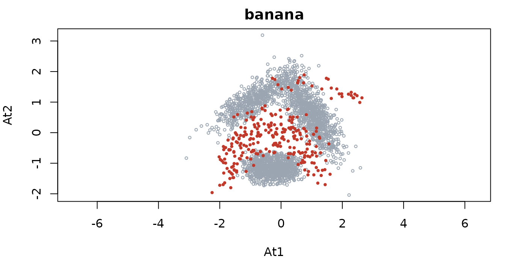
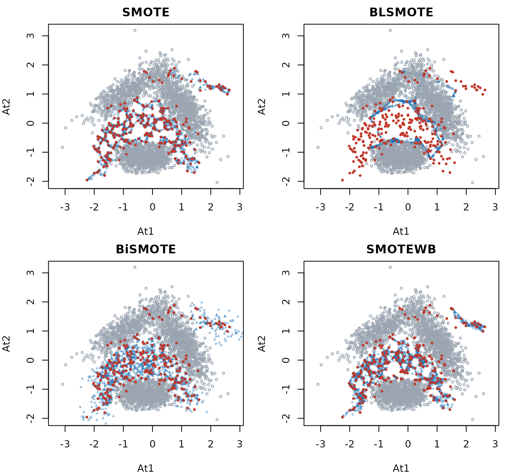
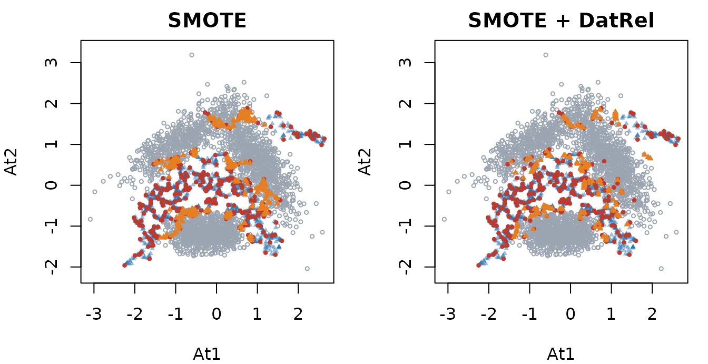

Getting started with imbalanceKit
Fatih Sağlam
2026-10-29
imbalanceKit.RmdimbalanceKit brings resampling methods, performance
metrics and data complexity measures for imbalanced classification
together. This article walks through a typical workflow on the
banana data: look at the problem, resample, post-process
the synthetic samples with DatRel, and check whether it helps a
classifier.
The data
banana is a two-dimensional data set with a minority
(positive) class that overlaps with the majority class. It
contains the usual difficulties of imbalanced data: a small minority
class, class overlap, noise and small disjuncts.
All resamplers take a numeric feature matrix (or data frame)
x and a factor class variable y. A small
helper for the plots of this article:
col_neg <- "#9aa5b1"
col_pos <- "#c0392b"
col_syn <- "#1f6fb2"
plot_classes <- function(x, y, x_syn = NULL, main = "") {
x <- as.matrix(x)
plot(x, type = "n", xlab = "At1", ylab = "At2", main = main, asp = 1)
if (!is.null(x_syn)) {
points(as.matrix(x_syn), col = adjustcolor(col_syn, 0.45), pch = 17, cex = 0.5)
}
neg <- y != "positive"
points(x[neg, , drop = FALSE], col = col_neg, pch = 1, cex = 0.5)
points(x[!neg, , drop = FALSE], col = col_pos, pch = 16, cex = 0.6)
}
par(mar = c(4, 4, 2, 1))
plot_classes(x, y, main = "banana")
How hard is the problem?
complexity() measures class imbalance, class overlap and
noise. Every measure is also available as its own function, for example
complexity_IR().
complexity(x, y, measures = c("IR", "R", "R_aug", "N1", "N3", "N4"), seed = 1)
#> IR R R_aug N1 N3 N4
#> 9.00000000 0.03750000 0.27689394 0.08219697 0.05757576 0.25000000IR is the imbalance ratio. R and
R_aug describe how much of the data lies in the overlap
region, and R_aug weighs the classes by their sizes so that
the minority class is not drowned. N1, N3 and
N4 are neighbourhood based measures of class overlap and
noise. See ?complexity_measures for all of them.
Oversampling
SMOTE() creates synthetic minority samples between
neighbouring minority samples. The result is a list.
set.seed(1)
m <- SMOTE(x, y)
names(m)
#> [1] "x_new" "y_new" "x_syn" "y_syn"
table(m$y_new)
#>
#> negative positive
#> 2376 2376x_new and y_new are the original data plus
the synthetic samples, which are also returned alone as
x_syn and y_syn. ovRate = 1 (the
default) balances the classes; a smaller value generates fewer
samples.
Methods of this package can be swapped freely because they share the interface. Here are four of them on the same data (minority samples in red, synthetic samples in blue):
set.seed(1)
res <- list(
SMOTE = SMOTE(x, y),
BLSMOTE = BLSMOTE(x, y),
BiSMOTE = BiSMOTE(x, y),
SMOTEWB = SMOTEWB(x, y)
)
par(mfrow = c(2, 2), mar = c(4, 4, 2, 1))
for (nm in names(res)) {
plot_classes(x, y, res[[nm]]$x_syn, main = nm)
}
The methods differ mainly in where they place the samples; the overlap region between the classes is where they differ most.
Post-processing with DatRel
DatRel is not a resampler by itself: it takes samples from any source and moves the ones that fall outside the region of their class back into it. The region is a set of balls, centred at a few dominating samples, that do not contain a sample of another class.
set.seed(1)
m <- SMOTE(x, y)
d <- DatRel(x, y, x_syn = m$x_syn, y_syn = m$y_syn)
d$n_relocated
#> $positive
#> [1] 295295 of the 2112 synthetic samples were outside the minority region and were relocated. The plot shows those samples (orange) before and after the relocation:
moved <- rowSums(abs(m$x_syn - d$x_syn)) > 0
par(mfrow = c(1, 2), mar = c(4, 4, 2, 1))
plot_classes(x, y, m$x_syn[!moved, ], main = "SMOTE")
points(m$x_syn[moved, ], col = "#e67e22", pch = 17, cex = 0.6)
plot_classes(x, y, d$x_syn[!moved, ], main = "SMOTE + DatRel")
points(d$x_syn[moved, ], col = "#e67e22", pch = 17, cex = 0.6)
oversampleDatRel() does both steps with a base method of
your choice, for example
oversampleDatRel(x, y, method = "BiSMOTE").
Does it help a classifier?
Resampling is only applied to the training data. Here a decision tree
is trained on the original training data, on SMOTE and on SMOTE +
DatRel, and compared on held-out test data over 10 random stratified
splits. evaluate() calculates several metrics at once.
split_data <- function(y, p_train = 0.7) {
idx <- unlist(lapply(split(seq_along(y), y), function(i) {
i[sample.int(length(i), round(p_train * length(i)))]
}))
sort(idx)
}
fit_eval <- function(x_train, y_train, x_test, y_test) {
fit <- rpart::rpart(y ~ ., data = data.frame(x_train, y = y_train))
pred <- predict(fit, data.frame(x_test), type = "class")
evaluate(y_test, y_pred = pred, positive = "positive",
metrics = c("BACC", "GMEAN", "F1", "MCC"))
}
set.seed(2026)
results <- lapply(1:10, function(r) {
i_train <- split_data(y)
x_tr <- x[i_train, ]; y_tr <- y[i_train]
x_te <- x[-i_train, ]; y_te <- y[-i_train]
s <- SMOTE(x_tr, y_tr)
d <- DatRel(x_tr, y_tr, s$x_syn, s$y_syn)
rbind(
original = fit_eval(x_tr, y_tr, x_te, y_te),
SMOTE = fit_eval(s$x_new, s$y_new, x_te, y_te),
`SMOTE + DatRel` = fit_eval(d$x_new, d$y_new, x_te, y_te)
)
})
round(Reduce(`+`, results) / length(results), 3)
#> BACC GMEAN F1 MCC
#> original 0.814 0.796 0.695 0.667
#> SMOTE 0.859 0.858 0.599 0.569
#> SMOTE + DatRel 0.860 0.859 0.601 0.573The table shows the mean of the 10 splits. Balancing the classes
raises the metrics that treat both classes equally (BACC,
GMEAN) but can lower F1 and MCC,
because more majority samples are classified as positive. Which method
wins depends on the data and the classifier, so compare several methods
and several classifiers on your own problem; the metrics of
evaluate() are described in ?metrics.
Where to go next
-
?UGOuses a base method together with a classifier and generates samples where the classifier is uncertain. -
?MCSMOTEhandles more than two classes with a transition matrix. - All oversamplers work with more than two classes (one-versus-rest).
- The reference page lists all methods by year of publication.